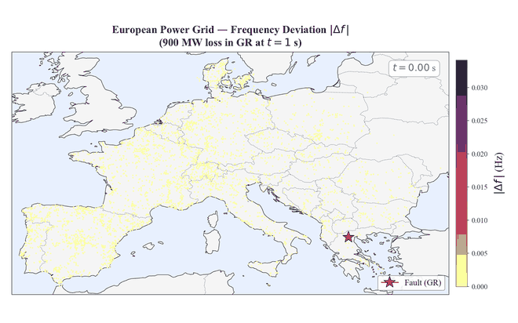
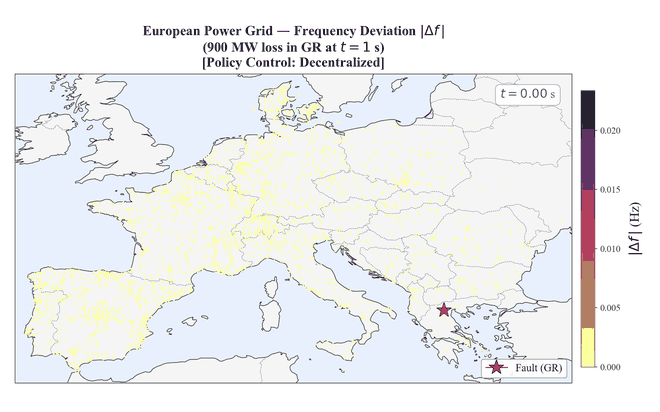
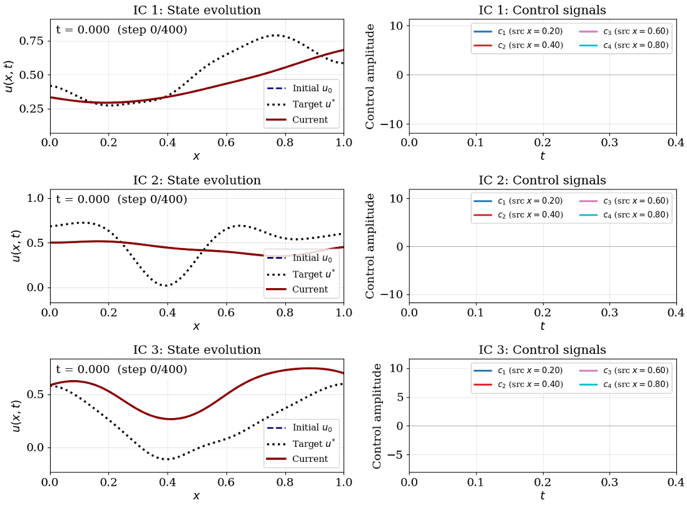
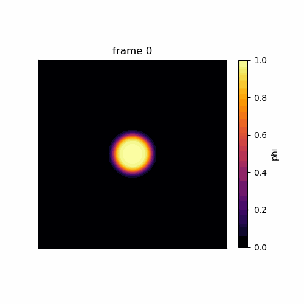
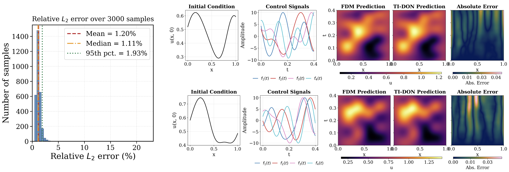
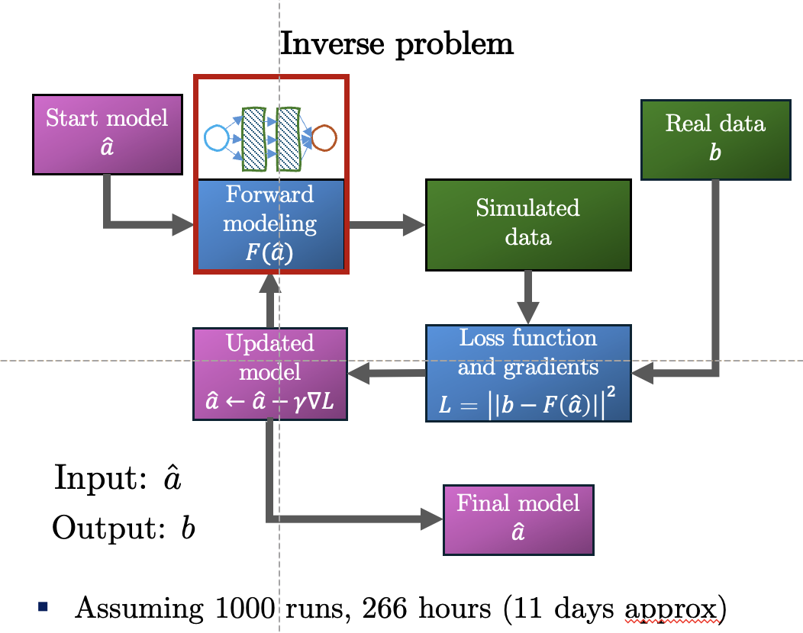
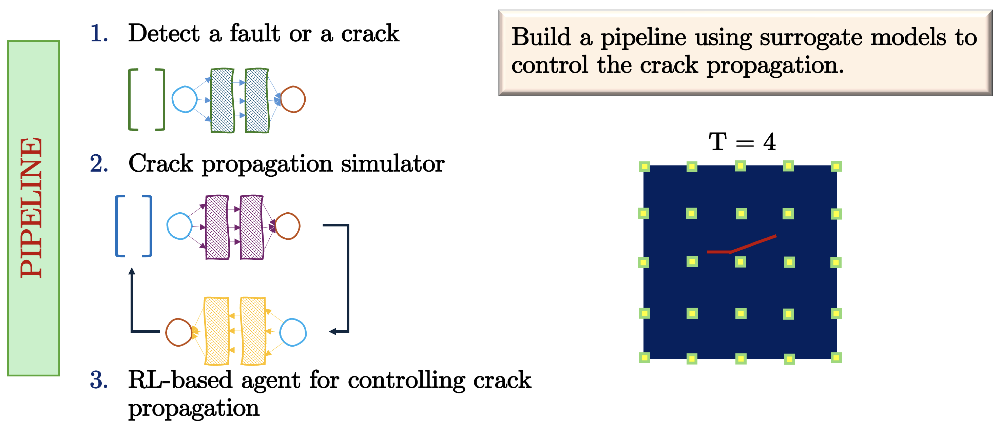

The foundations, literally.
Diploma and B.Tech in Civil Engineering at the Central Institute of Technology, Kokrajhar (9.2 & 8.98 CGPA). Concrete, surveying, structures — I learned how the physical world is held up, and where it fails.
PhD Researcher · Scientific Machine Learning · Johns Hopkins University
Neural operators, differentiable control of PDEs, and high-performance scientific computing — from turbulence to fracture, from the brain to the supercomputer.
I began by learning to build with concrete and steel in a small town in Assam. Somewhere along the way I fell for the equations underneath the structures — and then for teaching computers to solve them faster than we ever could by hand. This is that trajectory.
Diploma and B.Tech in Civil Engineering at the Central Institute of Technology, Kokrajhar (9.2 & 8.98 CGPA). Concrete, surveying, structures — I learned how the physical world is held up, and where it fails.
M.Tech at IIT Madras — top 5% of my class (CGPA 9.22), GATE top 3% nationwide. Numerical methods, optimization, data science. I stopped seeing beams and started seeing boundary-value problems. My first PINNs paper for inverse problems in heterogeneous media.
PhD in Civil & Systems Engineering with Dr. Somdatta Goswami. Deep operator networks that learn hidden physics to 95% accuracy, differentiable predictive control of PDEs, neural surrogates for traumatic-brain-injury modeling and fracture.
Multi-GPU neural-operator training on Argonne's Polaris (two Director's Discretionary Awards, 5,600 node-hours; 83% faster). Chishiki AI Fellow at UT Austin. 1st place, global Tesseract differentiable-simulation hackathon.
Graduate research intern at the Data Science Institute — building agentic workflows for materials-science applications and geometry-aware neural operators for moving-interface problems.
Learning maps between infinite-dimensional function spaces — \(\mathcal{G}_\theta : a(x)\!\mapsto\! u(x)\) — DeepONets and FNOs that replace expensive solvers and generalize across geometries and parameters.
DeepONet · FNO · JAXSteering physical systems in real time. Differentiable predictive control with time-integrated operators, robust to noise, delay, and the sim-to-real gap.
DPC · MPC · ControlRecovering material properties and governing parameters from sparse, noisy data by minimizing \(\mathcal{L}=\lVert b - F(\hat a)\rVert^2\) with interface-aware networks.
PINNs · I-PINNs · InversionDistributed multi-GPU training of high-dimensional operators on leadership-class supercomputers — because physics doesn't fit on one card.
CUDA · MPI · PolarisEvery panel below integrates a real governing equation, live, on your device — no videos, no pre-baked frames. Drag the parameters and watch the physics respond. These interactive demos mirror the systems I accelerate with neural operators in my research (see the real results ↓).
A vibrating membrane integrated by explicit finite differences and rendered as a live 3D wireframe. A driven source ripples outward; the damping term \(\gamma\) bleeds energy away.
Spinodal decomposition: a uniform mixture spontaneously separates into two phases and coarsens, minimizing interface energy. The same physics behind alloys, foams, and the moving interfaces I model at Livermore.
A genuine incompressible fluid solver (Stam's stable-fluids method): semi-Lagrangian advection, diffusion, and a pressure projection that keeps the flow divergence-free. Push it and watch vortices shed and tangle.
A heated rod that must track a moving target profile \(u^{*}\) (dashed). Distributed actuators inject and remove heat; a feedback policy drives the error to zero. A toy of my differentiable predictive control work — accepted at IEEE CDC 2026.
The interactive demos above are teaching tools. These are actual outputs from my papers — neural-operator controllers, learned surrogates, and high-fidelity solvers, straight from the experiments.


A 900 MW generation loss in Greece sends a frequency-deviation \(|\Delta f|\) wave across the continent. Left: uncontrolled, the disturbance propagates. Right: differentiable predictive control drives every node's frequency back to nominal in real time.
Cardinality-invariant neural-operator policies (CINOC) for multi-agent control of incompressible flow — scalable to any number of actuators and sensors. The differentiable-simulation pipeline that won 1st place at the global Tesseract hackathon.

Differentiable predictive control on a time-integrated neural operator drives the state \(u(x,t)\) to a target profile \(u^{*}\) with distributed actuators — accepted at IEEE CDC 2026.

Dendritic microstructure growth — the class of geometry-aware moving-interface problems I build neural operators for at Lawrence Livermore.

Across 3,000 unseen samples the time-integrated DeepONet matches the finite-difference solver to a median relative \(L_2\) error of 1.11% — while running orders of magnitude faster, which is what makes real-time control tractable.

Deep operator networks that recover governing parameters from data — \(\hat a \leftarrow \hat a - \gamma\nabla\mathcal{L}\) — to 95% accuracy. Published in CMAME.
Scalable PDE control policies invariant to the number of actuators and sensors. Accepted at ICML 2026.
Multimodal neural operators for real-time TBI biomechanics — toward personalized protective-gear design. WSE Trainee Award finalist.
A multimodal RAG assistant for Statics & Mechanics, deployed to 90 students in production on Streamlit.
Distributed CUDA + MPI training of high-dimensional PDE operators — 83% faster, 5,600 awarded node-hours on Polaris.

A neural-operator + finite-element hybrid that accelerates crack propagation while preserving accuracy, with an RL agent steering the crack. Built with FEniCSx.
Every paper, preprint, and work in review — across ML venues, computational-mechanics journals, and controls conferences. Also on my Google Scholar.
CINOC: Cardinality-Invariant Neural Operator Policies for Scalable PDE Control
Zanotta P., Sarkar D.R., Zheng H., Goswami S., Drgoňa J.
Learning to Control PDEs with Differentiable Predictive Control and Time-Integrated Neural Operators
Sarkar D.R., Goswami S. · arXiv:2511.08992
Learning Hidden Physics and System Parameters with Deep Operator Networks
Sarkar D.R., Kag V., Pal B., Goswami S. · 456:118926
Multimodal Neural Operators for Real-Time Biomechanical Modelling of Traumatic Brain Injury
Agarwal A., Sarkar D.R., Goswami S. · 109398
Learning Generalizable Neural Operators for Inverse Problems
Thorpe A.J., Tretiakov S., Sarkar D.R., Kumar K., Topcu U. · arXiv:2512.18120
Adaptive Interface-PINNs for Inverse Problems: Determining Material Properties for Heterogeneous Systems
Sarkar D.R., Annavarapu C., Roy P. · 249:104373
Uncertainty-Aware Optimization in Engineered Systems via Gradient Boosting and Differential Evolution
Sarkar D.R., Basu S., Manuel L., Goswami S.
ARIA: Adaptive Retrieval Intelligence Assistant — A Multimodal RAG Framework for Engineering Education
Luo Y., Sarkar D.R., Sangree R.H., Goswami S. · arXiv:2604.06179
Adaptive Interface-PINNs (AdaI-PINNs) for transient diffusion: forward and inverse problems in heterogeneous media
Roy S., Sarkar D.R., Annavarapu C., Roy P., Lecampion B., Valiveti D.M. · 244:104305
Interface Physics-Informed Neural Networks (I-PINNs) to Solve Inverse Problems in Heterogeneous Materials
Sarkar D.R., Annavarapu C., Roy P. · Machine Learning for Computational Science and Engineering
Research is a team sport played across continents. A few frames from the journey — from an M.Tech convocation in Chennai to ICML and the Sierra granite behind Livermore.